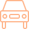

При выполнении своих обязанностей сотрудники ВРК могут работать не только в офисе компании, но и на территории клиента, из дома или в общественных местах (кафе, коворкингах и др.). Для каждого места работы есть свои особенности.
Крутите колесико мыши или используйте тачпад
Вы узнаете:
Правила безопасной работы
В офисе
Дома или в общественных местах
Во время командировки
Работа в офисе
Персональный ключ к ресурсам компании — это ваш корпоративный пропуск. Он подтверждает, что вы имеете право находиться в офисе.
Не допускайте входа посторонних
Если вы видите, что в офис пытается проникнуть неизвестный вам человек, спросите, к кому и с какой целью он пришёл.
Сопровождайте посетителей внутри офиса
Посетители могут находиться в офисе без сопровождения только в специально отведённых зонах для встреч.
Находясь в офисе, будьте внимательны. Если вы идёте на обед, совещание, встречу с коллегой, особенно когда уходите домой, обязательно убирайте или блокируйте все носители с конфиденциальной информацией. Документ, в котором описаны правила информационной безопасности на рабочем месте, называется Политика «чистого стола».
Политика «чистого стола»
Давайте изучим основные правила, которые помогут избежать утечки конфиденциальной информации.
Нажимайте на маркеры, чтобы узнать, какие риски раскрытия конфиденциальной информации несут разные предметы вашего рабочего стола
!
Если вы отсутствуете на рабочем месте (как в офисе, так и удалённо) в течение полудня или более, а также по окончании рабочего дня, убирайте все документы, папки, съёмные носители или портативные устройства с рабочего места в личный ящик или шкаф под замок, чтобы исключить их кражу.
Работа из дома и в общественных местах
Если вы используете ИТ-ресурсы, то, где бы вы ни работали, необходимо соблюдать требования Руководства по безопасности при удалённой работе.
Общие правила безопасности
Подключайте ноутбук к корпоративной сети через VPN (используйте «Cisco AnyConnect Secure Mobility Client») не реже 1 раза в 14 дней на 2 часа для получения необходимых обновлений приложений.
Исключение: когда сотрудник находится в ежегодном отпуске, больничном или по иной уважительной причине.
При переносе корпоративного ноутбука обязательно блокируйте экран, для этого используйте сочетание клавиш Win + L.
Правила работы из дома и в общественных местах
Нажимайте на вкладки, чтобы изучить информацию
Запрещено записывать пароли и хранить их на видном месте! Это влечёт риск несанкционированного доступа к системам компании и компрометации данных сотрудников и клиентов.
Во время важных переговоров отключайте «умные» гаджеты с функцией записи голоса.
Не оставляйте конфиденциальные документы в зоне доступа третьих лиц, в том числе родственников или друзей. Если данные на бумажном носителе больше не нужны, уничтожьте распечатки, предварительно измельчив их так, чтобы информация не была читаемой.
Не оставляйте корпоративные аппаратные ресурсы (например, ноутбук) без присмотра в общественных местах. Всегда следите за окружающей вас обстановкой.
Не используйте внешние электронные носители информации в общественных местах. Это небезопасно.
Работа в командировке
Сохранение имущества компании
Вы всегда должны знать местонахождение ноутбука и скрывать его от посторонних глаз.

Провоз в транспорте
Храните устройства с конфиденциальными данными запертыми и в безопасном месте. Если нет безопасного места, не оставляйте устройство без присмотра.
!
В командировке применяйте те же правила безопасности, что и при удалённой работе.
Практическое задание
Вы едете на поезде в командировку, и вам нужно ненадолго выйти. Ваш ноутбук стоит на столе в купе. Какое действие будет самым безопасным?
Выберите один вариант ответа
Верно!
Ваше решение полностью соответствует правилам безопасности. Всегда держите корпоративные устройства при себе.
Неверно
Оставлять ноутбук без присмотра, даже на короткое время, очень рискованно. Подумайте, что может случиться, пока вы отсутствуете.
Запомните:
1Используйте свой личный пропуск для входа и проходите через турникет по одному.
2Сопровождайте посетителей и убедитесь, что они находятся только в разрешённых зонах после предъявления документов.
3Никогда не оставляйте корпоративный ноутбук и другие устройства без присмотра.
4Всегда блокируйте экран, когда отходите от ноутбука. В общественных местах и транспорте используйте защитную плёнку или другие средства, чтобы скрыть экран от посторонних глаз.
5Убирайте все конфиденциальные документы и портативные устройства в запираемый шкаф или ящик, если уходите с рабочего места. Это касается как офиса, так и любого другого места работы.
6Не забывайте подключаться к корпоративной сети через VPN (Cisco AnyConnect) не реже одного раза в 14 дней для получения обновлений, если работаете удалённо.
Когда отходите от рабочего места, блокируйте экран ноутбука с помощью комбинации клавиш «Win+L».
Фиксируйте ноутбук к рабочему месту специальным тросиком. Если вы уходите на более чем 24 часа, то устройство необходимо выключить.
Обязательно запирайте в ящике папки, в которых хранится конфиденциальная информация. Не оставляйте их на видном месте.
При длительном отсутствии на рабочем месте убирайте все документы в личный ящик или шкаф, запираемый на ключ.
Не оставляйте портативные носители информации (например, CD-диски, USB-накопители) без присмотра. Это может привести к разглашению конфиденциальных данных и потере корпоративного имущества, а также навредить репутации компании. Их также следует хранить в запирающемся ящике.
Не выбрасывайте конфиденциальные документы в урну. Используйте шредер или специальный контейнер для уничтожения документов.